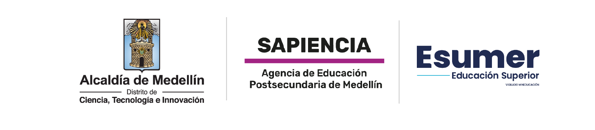

Los pedidos de Laura ya no caben en un Excel. Hoy le montamos una base de datos de verdad en la nube, escondida en una red privada, con copias automáticas… y desplegada con Terraform.
Alejandro Barrera · Cloud Architect

Dónde se guardan los datos, cómo se les pregunta y por qué un Excel no alcanza.
Los datos viven en tablas: cada columna es un dato (cliente, talla) y cada fila es un pedido. Nadie toca la tabla directamente: todo pasa por el motor, que busca, guarda y pone en fila a quienes escriben a la vez.
SELECT pregunta (“muéstrame los pedidos talla L”), INSERT agrega un pedido nuevo y UPDATE cambia uno: el #57 pasa de talla M a L. En milisegundos, aunque haya millones de filas.
Laura contrató a Ana, Luis y Marta. Los tres abren el mismo archivo de pedidos. Ana cambia una talla y guarda; Luis guarda su versión vieja encima… y el cambio de Ana desaparece.
El archivo tarda minutos en abrir, un día se daña y no hay copia. Laura necesita algo hecho para esto: una base de datos, que guarda millones de pedidos, deja trabajar a muchos a la vez y saca copias.
No todos los datos tienen la misma forma. Conoce las familias y para qué sirve cada una.
Las relacionales (SQL) guardan todo en tablas fijas y hablan SQL: orden y relaciones. Las NoSQL (“no solo SQL”) dejan la tabla fija y escogen la forma que mejor sirve al dato: llaves, documentos, grafos…
Regla: primero mira cómo es el dato, después escoges la base
Cada tipo existe porque resuelve una forma de dato mejor que los demás. No hay una base para todo: una empresa real usa varias a la vez. En la parte 3 vemos cuál servicio de AWS es cada una.
La pregunta del arquitecto: ¿cómo es el dato y cómo lo voy a usar?
Un servicio para cada tipo, con un caso de la tienda de Laura. Empezamos por RDS, la que montamos hoy.
Ya conoces los tipos. AWS tiene un servicio administrado para cada uno: tú escoges, AWS instala, parcha, saca copias y vigila. Vamos uno por uno, con un caso de la tienda de Laura.
El pedido 58 no copia el nombre del cliente: solo guarda su número. Con SQL, la base une las dos tablas y responde “el pedido 58 es de Pedro”. Así nunca hay datos repetidos ni contradictorios.
Úsala para: pedidos, facturas, inventario, notas
En una EC2 instalas MySQL y todo te toca a ti: parches, copias, vigilar el disco y levantarla a las 3 a. m. Con Amazon RDS escoges motor y tamaño, y AWS hace el resto. Hoy montamos RDS.
La tienda (EC2) vive en la calle pública. La base vive en dos calles privadas, en dos zonas (el DB subnet group). Su portero (Security Group) solo abre el 3306 a la tienda. Un robot de internet ni siquiera llega.
RDS te da un endpoint: un nombre largo que termina en rds.amazonaws.com. Desde la tienda escribes mysql -h + ese nombre y entras. Si preguntas qué IP es, responde una 10.0.x.x: solo existe dentro de la red.
RDS saca una copia diaria y guarda cada cambio. A las 3:20 Luis borra por error los pedidos de la semana. Laura no llora: restaura la base a las 3:15, cinco minutos antes del error.
Con Multi-AZ, RDS mantiene una copia exacta en otra zona, al instante. Si la zona 1a falla, la gemela toma el control en 1 o 2 minutos y la tienda sigue vendiendo. Cuesta el doble: se usa en producción.
Miles de clientes solo están mirando el catálogo. RDS crea réplicas de lectura que responden esas preguntas (SELECT), y la base principal queda libre para lo importante: guardar los pedidos.
Con el número del casillero vas directo, sin buscar entre todos. Por eso responde igual de rápido con 10 clientes que con un millón al mismo tiempo. No te preocupas por servidores.
Úsala para: carritos, sesiones, juegos, apps con picos
La primera vez se busca en la bodega (la base en disco): 20 ms. Se deja una copia en el mostrador (la memoria RAM) y las siguientes veces sale en medio milisegundo.
Úsala para: caché, rankings, contadores, sesiones
En una tabla fija, todos los productos tienen las mismas columnas y quedan huecos. En una base de documentos, cada producto es un JSON con solo sus campos: la gorra no necesita talla.
Úsala para: catálogos, perfiles, contenidos
Camila compró la camiseta. Sofía también, y además la gorra. Siguiendo las líneas, la base recomienda la gorra a Camila. Recorrer conexiones es lo que mejor hace una base de grafos.
Úsala para: recomendaciones, fraude, redes sociales
El sensor envía la temperatura cada minuto, siempre con su hora. Son millones de datos y la pregunta típica es por un rango: “¿cuál fue el promedio de la última hora?”.
Úsala para: sensores, métricas, IoT, monitoreo
Guardar un pedido es trabajo de RDS. Pero “¿qué vendí por mes en 5 años?” obliga a leer millones de filas de golpe. Eso lo hace una bodega de datos y lo convierte en un tablero.
Úsala para: informes, tableros, inteligencia de negocio
Cada palabra apunta a los productos donde aparece. El buscador cruza las listas, corrige errores (“camisetta”) y ordena por qué tan bien coincide cada producto.
Úsala para: buscadores, análisis de logs
Tablas que se relacionan → RDS / Aurora pedidos
Lo importante son las conexiones → Neptune recomendaciones
Una llave y respuesta al instante → DynamoDB carrito
Medidas con hora → Timestream sensores
Lo más pedido, en memoria → ElastiCache catálogo veloz
Analizar millones de filas → Redshift informes
Memoria que no se puede perder → MemoryDB contadores
Buscar texto con errores → OpenSearch buscador
Fichas con campos distintos → DocumentDB catálogo
Eventos masivos estilo Cassandra → Keyspaces clics
Una empresa real usa varias a la vez. Hoy en el laboratorio montamos la primera: RDS MySQL (capa gratuita: db.t3.micro, 20 GB).
Cinco casos de la tienda. Clic: aparece la respuesta. Otro clic: el siguiente caso.
Creamos la base de Laura en una red privada, le hablamos en SQL desde la tienda y la apagamos.
AmazonRDSFullAccessEC2 ya lo tiene desde la clase de TerraformTen a mano también tu .ppk y MobaXterm: hoy entramos a la tienda por SSH para hablarle a la base.
mkdir $HOME\tienda-bdcode $HOME\tienda-bdcarpeta nueva, abierta en VS Codeterraform initterraform applyPlan: 12 to add → yes · RDS tarda 5–10 min ☕# =====================================================================
# La base de pedidos de Laura en RDS · Esumer · Cloud Computing, Redes y Ciberseguridad
# Red con 1 subred pública (la tienda) y 2 privadas en 2 zonas (la base),
# EC2 con el cliente MySQL y una base RDS MySQL a la que SOLO entra la tienda.
#
# Uso (en la terminal de VS Code, carpeta con este main.tf y tu terraform.tfvars):
# terraform init
# terraform apply (RDS tarda 5-10 minutos en quedar lista)
# terraform destroy (al final; no la dejes encendida)
# =====================================================================
terraform {
required_providers {
aws = { source = "hashicorp/aws", version = "~> 6.0" }
}
}
provider "aws" {
region = "us-east-1"
}
# ---------- Tus datos (van en terraform.tfvars, que NUNCA se sube a GitHub)
variable "mi_ip" { type = string } # tu IP de casa con /32
variable "llave" { type = string } # nombre de tu key pair (.ppk)
variable "db_password" { # clave de la base: mínimo 8 caracteres
type = string
sensitive = true
}
# ---------- 1 · La red: 1 calle pública (tienda) y 2 privadas (base de datos)
resource "aws_vpc" "tienda" {
cidr_block = "10.0.0.0/16"
enable_dns_hostnames = true
tags = { Name = "tienda-vpc" }
}
resource "aws_subnet" "web" {
vpc_id = aws_vpc.tienda.id
cidr_block = "10.0.1.0/24"
availability_zone = "us-east-1a"
map_public_ip_on_launch = true
tags = { Name = "web-publica" }
}
resource "aws_subnet" "bd_a" {
vpc_id = aws_vpc.tienda.id
cidr_block = "10.0.11.0/24"
availability_zone = "us-east-1a"
tags = { Name = "bd-privada-a" }
}
resource "aws_subnet" "bd_b" {
vpc_id = aws_vpc.tienda.id
cidr_block = "10.0.12.0/24"
availability_zone = "us-east-1b"
tags = { Name = "bd-privada-b" }
}
resource "aws_internet_gateway" "puerta" {
vpc_id = aws_vpc.tienda.id
tags = { Name = "tienda-igw" }
}
resource "aws_route_table" "publica" {
vpc_id = aws_vpc.tienda.id
route {
cidr_block = "0.0.0.0/0"
gateway_id = aws_internet_gateway.puerta.id
}
tags = { Name = "rt-publica" }
}
resource "aws_route_table_association" "web" {
subnet_id = aws_subnet.web.id
route_table_id = aws_route_table.publica.id
}
# ---------- 2 · Los porteros: uno para la tienda y otro para la base
resource "aws_security_group" "tienda" {
name = "tienda-sg"
description = "SSH solo desde mi IP"
vpc_id = aws_vpc.tienda.id
ingress {
description = "SSH solo mi IP"
from_port = 22
to_port = 22
protocol = "tcp"
cidr_blocks = [var.mi_ip]
}
egress {
from_port = 0
to_port = 0
protocol = "-1"
cidr_blocks = ["0.0.0.0/0"]
}
tags = { Name = "tienda-sg" }
}
resource "aws_security_group" "bd" {
name = "bd-sg"
description = "MySQL solo desde la tienda"
vpc_id = aws_vpc.tienda.id
ingress {
description = "MySQL solo desde el SG de la tienda"
from_port = 3306
to_port = 3306
protocol = "tcp"
security_groups = [aws_security_group.tienda.id]
}
tags = { Name = "bd-sg" }
}
# ---------- 3 · La base de datos: RDS MySQL en las calles privadas
resource "aws_db_subnet_group" "bd" {
name = "tienda-bd-subnets"
subnet_ids = [aws_subnet.bd_a.id, aws_subnet.bd_b.id] # RDS pide 2 zonas
tags = { Name = "tienda-bd-subnets" }
}
resource "aws_db_instance" "pedidos" {
identifier = "pedidos-laura"
engine = "mysql"
engine_version = "8.0"
instance_class = "db.t3.micro" # capa gratuita
allocated_storage = 20 # GB (capa gratuita)
storage_type = "gp3"
db_name = "tienda"
username = "laura"
password = var.db_password
db_subnet_group_name = aws_db_subnet_group.bd.name
vpc_security_group_ids = [aws_security_group.bd.id]
publicly_accessible = false # NUNCA abierta a internet
backup_retention_period = 1 # copia automática diaria (1 día)
skip_final_snapshot = true # solo para el lab: borrar sin foto final
deletion_protection = false
tags = { Name = "pedidos-laura" }
}
# ---------- 4 · La tienda: EC2 con el cliente MySQL instalado al nacer
data "aws_ssm_parameter" "amazon_linux" {
name = "/aws/service/ami-amazon-linux-latest/al2023-ami-kernel-default-x86_64"
}
resource "aws_instance" "tienda" {
ami = data.aws_ssm_parameter.amazon_linux.value
instance_type = "t3.micro"
subnet_id = aws_subnet.web.id
vpc_security_group_ids = [aws_security_group.tienda.id]
key_name = var.llave
user_data = join("\n", ["#!/bin/bash", "dnf install -y mariadb105"])
tags = { Name = "tienda-laura" }
}
# ---------- 5 · Lo que Terraform te muestra al terminar
output "ip_tienda" {
value = aws_instance.tienda.public_ip
}
output "endpoint_bd" {
value = aws_db_instance.pedidos.address
}
output "conectarse" {
value = "mysql -h ${aws_db_instance.pedidos.address} -u laura -p tienda"
}
mi_ip = "TU.IP.DE.CASA/32" # mírala en https://checkip.amazonaws.com llave = "NOMBRE-DE-TU-KEY-PAIR" db_password = "UnaClaveLarga2026" # mínimo 8 caracteres; no la compartas
terraform init terraform apply
ec2-user · tu .ppkCREATE TABLE pedidos ( id INT PRIMARY KEY, cliente VARCHAR(50), producto VARCHAR(50), talla CHAR(2) ); INSERT INTO pedidos VALUES (55,'Sofía','Camiseta','M'), (56,'Andrés','Buzo','L'), (57,'Camila','Camiseta','M'); SELECT * FROM pedidos; UPDATE pedidos SET talla='L' WHERE id=57; SELECT * FROM pedidos WHERE talla='L';
Checkpoint ✅ al chat: pantallazo del SELECT con el pedido 57 en talla L. Para salir: exit.
nslookup <endpoint_bd>responde una 10.0.11.x: dirección privadaTest-NetConnection <endpoint_bd> -Port 3306False: desde internet no se llega ✓terraform destroyborra los 12 recursos (RDS tarda unos minutos)Checkpoint ✅ al chat: pantallazo del False y del Destroy complete! Resources: 12 destroyed.
Hoy los pedidos de Laura dejaron el Excel: ahora viven en una base de datos de verdad, escondida y protegida. 🗄️🔒